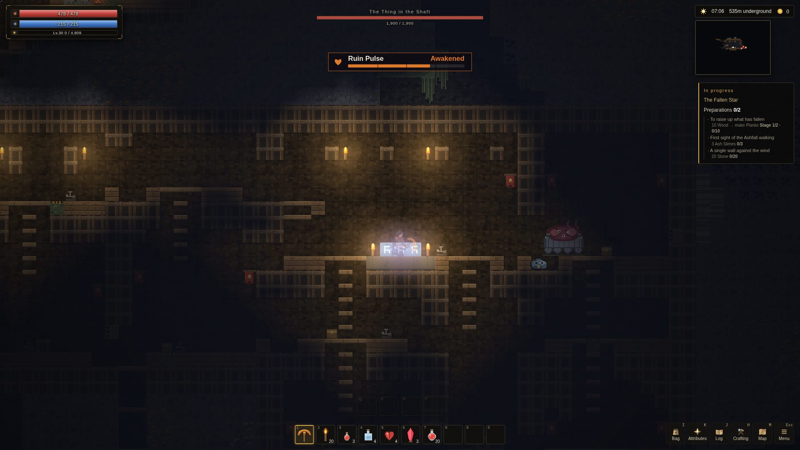
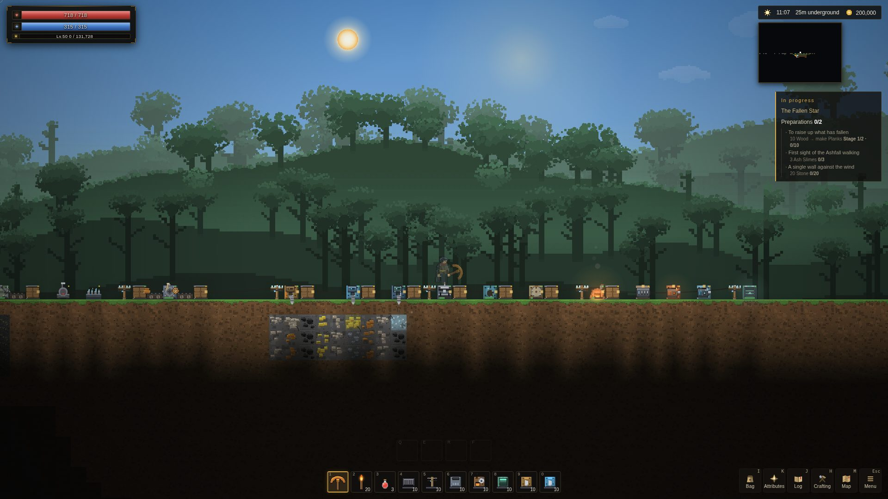
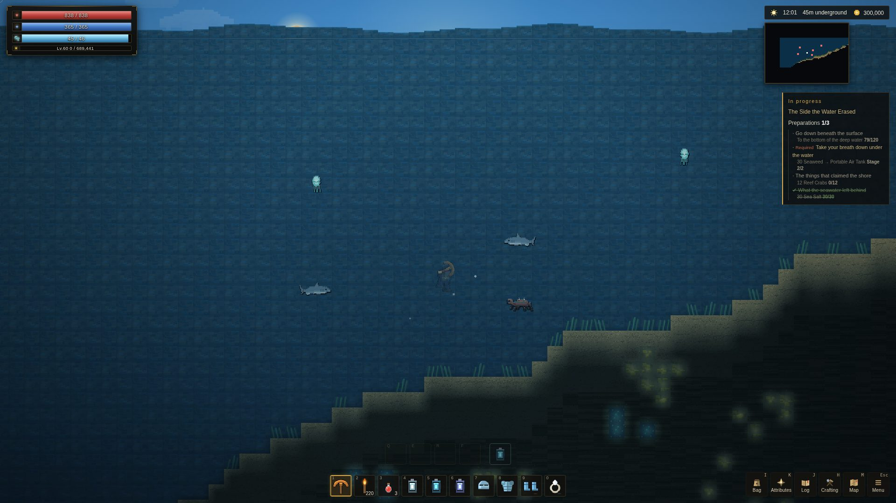
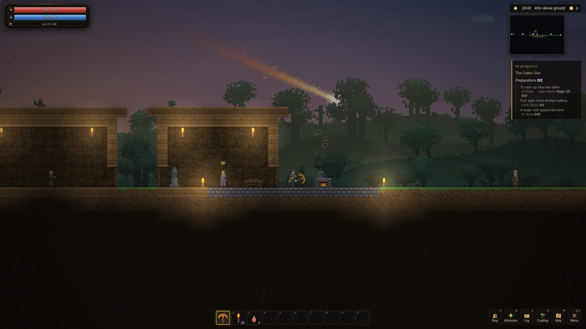
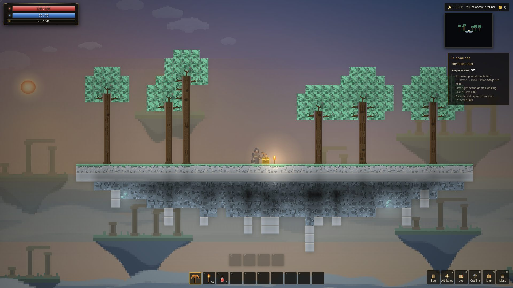
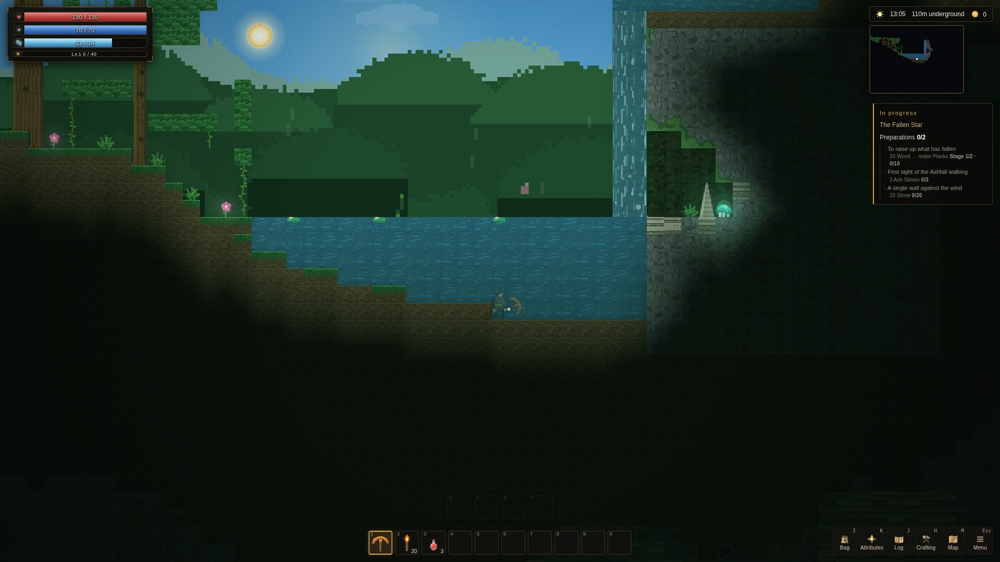
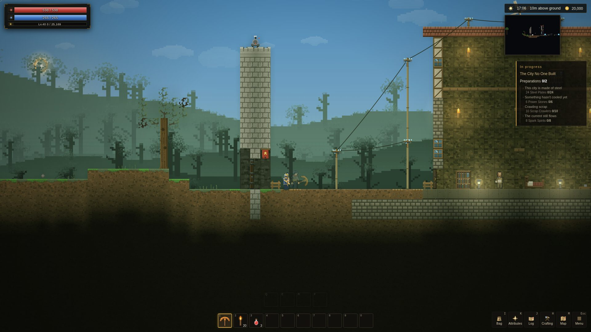

이름 없는 노인???
유적은 조용히 두면 잠들어 있지. 하지만 오래 머물면 맥박이 뛰기 시작한다네. 맥박이 오를수록 함정이 깨어나고, 끝방의 주인이 눈을 뜨지. 이기고 나면 메아리가 남아 — 더 센 놈과 다시 겨뤄 볼 수 있다네.
읽기 전에, 해 보세요
아래 화면이 게임 전체입니다. 설치도 계정도 없습니다. 웹과 내려받는 판은 같은 v1.1.2 입니다. v1.0.x 의 저장은 세계 폭이 달라 열리지 않습니다.
진행 상황은 이 브라우저 안에 저장됩니다 · 저장에 대해 자세히
무슨 일이 있었나
한밤중에 하늘이 갈라졌다. 떨어진 것은 돌이 아니었다 — 부딪히기 직전, 그것은 분명히 몸을 뒤틀어 피하려 했다.
그것은 다섯 갈래 빛으로 부서져 흩어졌고, 그중 한 조각이 당신의 오른손에 박혔다. 눈을 떴을 때 세계는 색을 잃어가고 있었다. 사람들은 그것을 잿빛이라 불렀다.
잿빛은 재가 아니다. 잠든 별 조각의 꿈이 둘레의 모든 것에게서 "나는 무엇이었지?"에 대한 답을 지워 버리는 것이다. 색이 빠지고, 형태가 흐려지고, 결국 아무것도 아닌 것이 된다.
흩어진 조각을 찾아 재우거나 깨우는 것 — 그것이 당신이 할 일이다.
그리고 그 일은 결국 손으로 하는 일이다. 땅을 파고, 쓸 것을 만들고, 길을 막는 것과 싸운다.
직접 들어 보세요
아래 화면은 모두 손대지 않은 플레이 화면(영어판)입니다. 장면마다 그곳을 잘 아는 사람이 무엇을 하는 곳인지 말해 줍니다.

이름 없는 노인???
유적은 조용히 두면 잠들어 있지. 하지만 오래 머물면 맥박이 뛰기 시작한다네. 맥박이 오를수록 함정이 깨어나고, 끝방의 주인이 눈을 뜨지. 이기고 나면 메아리가 남아 — 더 센 놈과 다시 겨뤄 볼 수 있다네.


케이드기술자
1층 용광로에서 녹인 주괴를 벨트 기둥으로 올려 보내면, 2층 가압기가 강철판을 찍고 3층 조립기가 전선을 감아. 옆 건물은 지하 탄광이 캔 석탄으로 제 발전기를 먹이고, 모자란 전기는 옥상 풍차가 채워. 네가 자는 동안에도 공장은 돌아가 — 막히는 곳만 찾아서 고치면 돼.


윤슬가라앉은 도시의 마지막 사람
위로 올라간 사람은 아무도 안 돌아왔어. 그러니 너는 내려와 봐. 숨은 산소통으로 늘리고, 깊이 갈수록 빛이 줄어드는 걸 잊지 마. 바닥 어딘가에 가라앉은 유적이 있어 — 그리고 드래곤 알은 내가 가지고 있어.


미라마녀
하늘이 가끔 돌을 던져. 불덩이가 보이면 멀리 떨어져 있어 — 바로 밑에 있으면 살아남지 못하니까. 식은 구덩이 한가운데엔 운석이 박혀 있고, 둘레엔 별빛 수정이 돋아 있어.


가른훈련소 교관
하늘 섬은 걸어서는 못 간다. 발판을 쌓든 날개를 달든 올라가 봐. 바람의 사당을 찾으면 공중에서 한 번 더 뛸 수 있고, 폭풍 제단에는 결전이 기다린다. 굴러야 강해진다.


보린대장장이
땅은 판 만큼 네 것이다. 광맥을 캐 오면 내가 두드려 주지. 동굴도 갈래가 있어 — 이끼 굴, 종유 굴, 수정 굴, 독기 굴. 폭포 뒤나 금 간 자갈 너머에도 길이 숨어 있다.


하란여관 주인
여명 마을은 네가 하는 만큼 자라. 집이 서고, 상인이 늘고, 밭이 생기지. 밭엔 물을 줘야 작물이 자라 — 스프링클러를 사 두면 아침마다 알아서 적셔 줘. 방은 얼마든지 있어.
열세 곳
지역마다 지형도 날씨도 사는 것도 다릅니다. 어떤 땅에는 비 대신 눈이 내리고, 어떤 물 위는 밟고 건널 수 있습니다.
잿빛 숲
무엇을 향해 가는가
자유롭게 파고 짓되, 갈 곳은 분명합니다. 장마다 목표가 주어지고 그것을 끝내야 다음 장이 열립니다.
지역마다 다른 적을 정해진 수만큼 정리해 길을 엽니다.
다음 장비에 필요한 재료를 캐고 모읍니다.
각 지역의 주인과 맞붙습니다. 아래에 전부 있습니다.
정해진 물건을 직접 만들어야 넘어갑니다.
특정 깊이까지 파고 내려갑니다.
목표를 다 끝내고 나서도 남는 것이 있습니다 — 업적 일흔다섯 개가 여덟 갈래로 나뉘어 일지에 쌓입니다. 해야 할 숙제가 아니라 해낸 일을 적어 두는 자리라, 그중 여섯 개는 달성하기 전까지 무엇인지도 보이지 않습니다.
세어 보면 이만큼입니다. 위 화면과 아래 목록이 이 숫자의 실물입니다.
일흔다섯 종
지역마다 다른 것이 나옵니다. 아래는 그중 스물다섯 종입니다.
스물세 종
각 지역의 끝에는 그 지역을 그렇게 만든 존재가 있습니다. 싸우는 동안 두 번에서 네 번 모습을 바꾸고, 형태가 바뀔 때마다 통하던 자리가 죽는 자리가 됩니다. 모두 스물세 종이고, 아래는 이야기가 데려가는 열세 종입니다 — 나머지 열은 유적 안쪽과 아무도 말해 주지 않는 자리에 있습니다.
여정
세션 1의 여덟 장을 펼쳐 두었습니다. 종장부터는 결말과 이어져 있어 가렸고, 세션 2·3도 같은 까닭으로 가립니다.
내 컴퓨터에 두고 하기
내려받은 버전은 연결 없이 돌아가고, 이 폴더 밖 어디에도 파일을 설치하지 않습니다. 브라우저 데이터를 지워도 저장이 날아가지 않습니다.
Windows · macOS